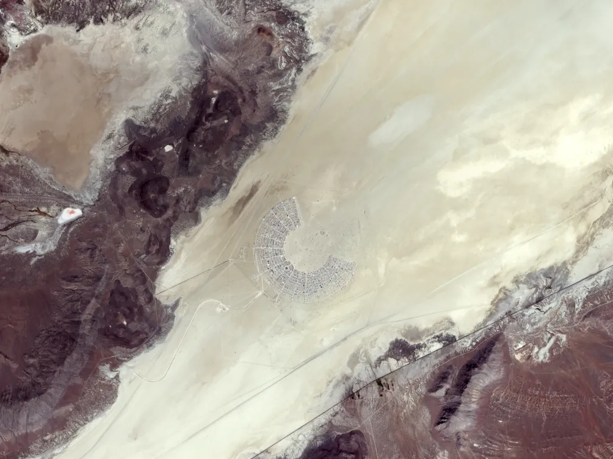
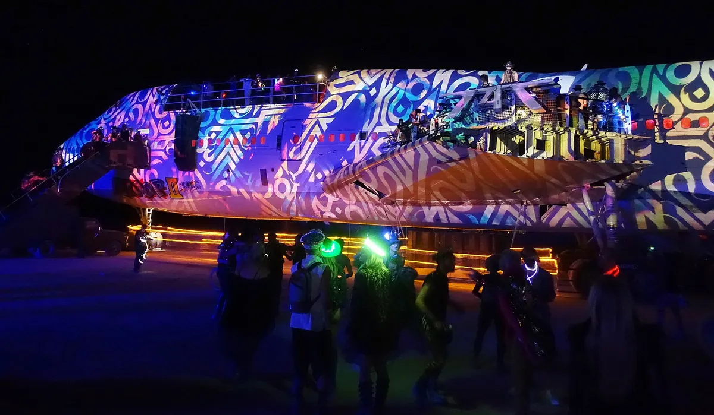
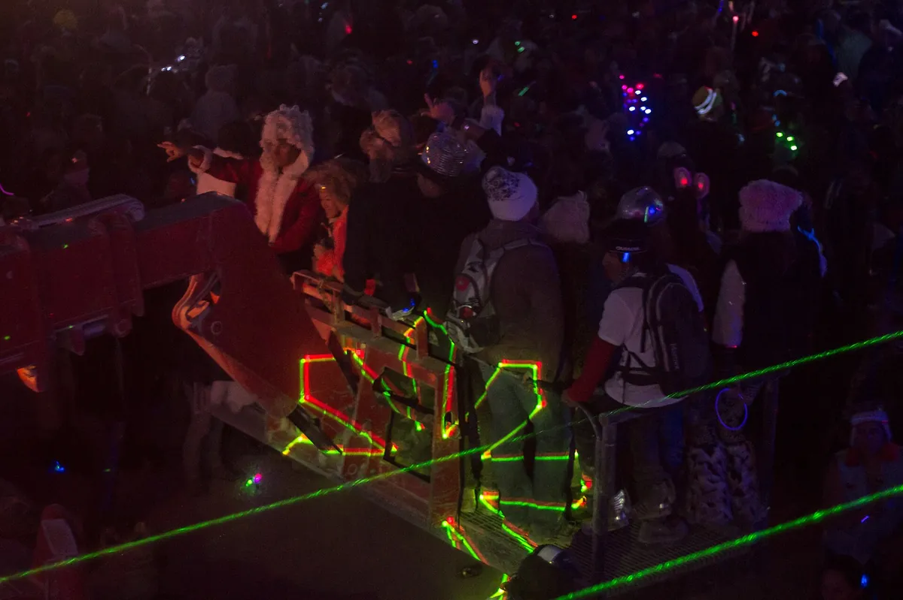
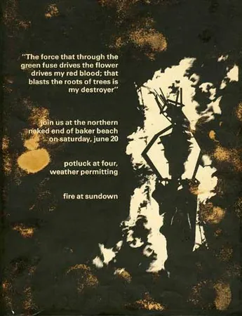

Burning Man
What Is Burning Man?
A participant-built city in the Nevada desert, with no central lineup or main stage. What happens there, and what its sound camps actually play.
A city, not a festival.
Most descriptions of Burning Man start with the photographs: the dust, the costumes, the art cars lit up at night. They are accurate and they miss the part that makes it strange. Burning Man is not a festival that happens to be in a desert. It is a city that exists for a week, run on its own rules.
That is also why the music at Burning Man is so hard to describe from outside. Lee Burridge has played sunrise sets at Robot Heart for more than a decade, but he is not part of an event-wide festival bill. This guide covers what Burning Man is, where it happens, what people do there and what it costs, and then answers the question this site is here for: is it a music festival, and what do its sound camps actually play?
| Festival expectation | Burning Man reality |
|---|---|
| A central lineup | No event-wide lineup; camps and art cars programme their own music |
| A main stage | No main stage; sound is distributed across the city |
| Food and drink vendors | Participants bring what they need; only limited essentials are sold |
| An audience watching a production | Participants build camps, art, services and events |
| A permanent venue | Black Rock City is built in the Nevada desert and removed after the event |
| Leave when the final act ends | The city culminates in the Man burn and Temple burn, then disappears |
Black Rock City.
Black Rock City is the name of the city Burning Man builds, and it is a real city in most of the ways that matter for a week: streets, addresses, rangers, medical tents, even an FAA-approved airport since 2002. It stands on the dry lake bed of the Black Rock Desert in Pershing County, a flat expanse of alkaline dust where almost nothing grows.

The city is laid out as an arc, like most of a clock face. Radial streets are named by the time they point to, from 2:00 to 10:00, and concentric streets cross them, so a camp's address reads like "4:30 and E". The Man stands at the centre of the arc, where the hands of the clock would meet. The Temple stands further out, and beyond it is the open desert everyone calls the deep playa. A 9.2-mile perimeter fence, known as the trash fence, catches anything the wind carries away.
Almost everything in Black Rock City is brought by the people who live in it. Groups register as theme camps and build something for everyone else: a bar that gives drinks away, a dome, a stage, a kitchen. There is a gate, a ticket and an organising body, the Burning Man Project, a nonprofit since 2013. Most of the rest is built by participants.
Burning Man 2027
Burning Man 2027 runs from 29 August to 6 September 2027, and its theme is Spellbound.
What happens at Burning Man.
The honest answer to "what do you actually do at Burning Man" is: whatever the city offers that day, and whatever you brought to offer it back. There is no schedule from the organisers beyond the burns. Days are spent on bicycles crossing the playa to look at art, visiting camps, sheltering from heat and dust storms. Nights are when the art cars come out and the sound camps start.
Burning Man art is the part most visitors mention first. Large installations stand across the open playa, many of them built to be climbed and some of them built to be burned. Art cars, officially mutant vehicles, are licensed moving sculptures: a dragon, a galleon, a Boeing 747 fuselage. They carry people across the desert at walking pace and, increasingly since the 2000s, carry sound systems too.

The week builds towards two fires. On the second-to-last night the Man is burned, in front of most of the city. On the last night the Temple burns, and the mood is the opposite. During the week people write on its walls and leave photographs and letters for those they have lost, and it burns in silence: no music, no dancing, no fire from the art cars.
Then the city is taken down. The principle is called Leaving No Trace, and it is checked: after the event, crews walk the playa in lines picking up what is known as MOOP, matter out of place. The Bureau of Land Management then inspects the lake bed, and the standard it holds the city to is an average of one square foot of debris per acre.
The ten principles.
The Burning Man principles were written down by co-founder Larry Harvey in 2004, eighteen years after the first burn. They were meant to describe what the event had already become rather than to design it. The ten are radical inclusion, gifting, decommodification, radical self-reliance, radical self-expression, communal effort, civic responsibility, leaving no trace, participation and immediacy.
In practice, three of them shape the week more than the rest. Decommodification is why ordinary vending and advertising are absent. The centrally operated coffee shop ended in 2022; the official 2026 survival guide lists ice at Arctica as the principal on-playa sale. Gifting is what replaces commerce: people offer food, drinks, workshops and performances without charging at the point of use. Radical self-reliance is why you still arrive with your own water, food and shelter for a week in a desert where daytime highs passed 100°F (38°C) as recently as 2022.
The music
Is Burning Man a music festival?
Not in the conventional sense. Burning Man has no central music lineup, main stage or event-wide headliners. The Burning Man Project does not programme the city as a promoter would: theme camps and mutant-vehicle crews build their own spaces, organise parties and choose the DJs who play them. Music is therefore a major part of Black Rock City without defining the whole event.
It is also, in this site's view, one of the places that shaped a particular strain of melodic house and techno. Both things can be true, and the tension between them is the story of music at Burning Man.
How the music got in
Electronic music was not welcome at first. The first sound camp arrived in 1992, run by Craig Ellenwood and Terbo Ted with four Peavey speakers, two turntables and a generator. Larry Harvey asked them to set up a mile from the centre of camp, with the speakers facing out into the empty desert. According to the Burning Man Journal's own history, some participants tried to slash the speakers.
The rave camp stayed on the edge through the 1990s, and later became known as the Techno Ghetto. Today the geography is formalised. Large sound camps must sit in the large-scale sound zones along the 2:00 and 10:00 avenues, at the two ends of the arc, facing towards the open playa. Within the city, the current policy defines conversational level as 60 dBA at the border of the nearest neighbouring camp or the centre of the nearest street; low-frequency bass is negotiated between neighbours. Since 2015 the biggest mobile systems have played in the Deep Playa Music Zone, far out beyond the Man.
So the music at Burning Man still lives where it was first sent: at the edges and out in the dark, on systems built and programmed by participants rather than an event-wide promoter.
Robot Heart
Robot Heart is the sound camp most people mean when they talk about music at Burning Man. It began in 2008, when George "Geo" Mueller turned an old double-decker bus into a mobile sound system. The bus, crowned with a giant illuminated heart, drives into the deep playa at night, and its sets play on until well after sunrise.

Robot Heart's reputation rests on those sunrise sets, and above all on Lee Burridge's. Filmed sunrise sets of his at the bus go back to 2012, and they are widely credited with helping to define the sound fans nicknamed playa tech: melodic, percussive house at an unhurried tempo, with warm synths and hand drums. Burridge's All Day I Dream parties, started in 2011, carry the same sound into the rest of the year.
Mueller died suddenly in March 2021, aged 50. The camp has carried on without him and has kept one of its founding habits: in 2024 it answered a request for its lineup with a game of hangman.
Mayan Warrior
The other name that comes up most is Mayan Warrior, an art car from Mexico City. It was founded by Pablo González Vargas with a group of Mexican and Northern Californian artists, and first reached the playa in 2012, or 2011 by some accounts. Its design comes from Mayan masks González Vargas saw at the National Museum of Anthropology in Mexico City, built onto a stripped-down International 4400 truck.
Its mission was partly to bring Mexico's electronic scene to Burning Man, and it has hosted Mexican DJs alongside international ones such as Damian Lazarus, DJ Tennis and Bedouin. Its own channel leans towards melodic techno and live electronic acts such as HVOB, Monolink and RÜFÜS DU SOL.
The truck burned on 3 April 2023, on the way to a fundraiser in Punta Mita, Mexico. It was rebuilt. For 2026 the collective paused the art car for the first time in more than a decade and ran Discosmos, a fixed camp at 2:00 and J, instead.
A short history of Burning Man.
Burning Man history begins on 22 June 1986, on Baker Beach in San Francisco, when Larry Harvey and Jerry James burned an eight-foot wooden man in front of around 35 people. It grew on the beach for four years. In 1990, after park police objected that the organisers had no permit, it moved to the Black Rock Desert with members of the Cacophony Society, a San Francisco prank group that had been organising trips out of the city.

The 1990s turned an art party into a city. After a driver ran over a tent in 1996, the 1997 event banned driving for everyone except approved mutant vehicles and service vehicles, the rule that eventually made art cars the transport of the playa. The street grid, the rangers and the ticket followed. In 2013 the organisation became a nonprofit, the Burning Man Project.
| Year | Attendance | What happened |
|---|---|---|
| 1986 | 35 | First burn, Baker Beach, San Francisco |
| 2019 | 78,850 | The peak |
| 2020 | none | Cancelled for the pandemic, the first cancellation |
| 2021 | none | Cancelled again |
| 2023 | 74,126 | Rain floods the playa over Labor Day weekend |
| 2024 | 69,141 | First year since 2011 not to sell out |
| 2025 | 72,181 |
Attendance peaked at 78,850 in 2019. The event was cancelled in 2020 and 2021 because of the pandemic, the first cancellations in its history, and thousands went into the desert anyway. In 2023 heavy rain turned the lake bed to mud over Labor Day weekend: the gates and the airport closed, around 73,000 people were told to shelter in place, and the Man burned two days late, on 4 September, as the exodus began. In 2024 the event failed to sell out for the first time since 2011, with 69,141 attending. 2026 was the fortieth anniversary.
Why is Burning Man so controversial?
Three arguments come back every year. The first is money. Tickets start at several hundred dollars, and some camps offer turnkey accommodation to wealthy visitors who arrive to a built camp, fed and cleaned for them. Burners call them plug-and-play camps, and they sit awkwardly beside a principle of radical self-reliance. The second is the environment. A city that leaves no trace on the playa still flies and drives its people and supplies in from around the world. The third is the organisation's own finances, which it has described publicly as strained since 2024.
Music has been part of the argument too. Big-name DJs, filmed sets and camps with their own following all push towards the festival Burning Man says it is not.
Hearing Burning Man from home.
The story of music at Burning Man is a story of being sent to the edge: a mile out in 1992, onto the 2:00 and 10:00 avenues now, into the deep playa after dark. What grew there is music made for the long stretch from the middle of the night into sunrise, programmed camp by camp rather than through one public festival bill.
Most of it is only half-available afterwards. Some camps and DJs film their sets and upload them, as Robot Heart and Mayan Warrior do, and the rest exists only for the people who were standing there. Lee Burridge put the whole of his 2025 Saturday sunrise at Robot Heart online, three hours of it, which is as close as a recording gets to the week.
The rest of the listening is elsewhere. For the opposite format, where the camera is the point, our guide to the best Boiler Room sets ranks eighteen of them. And the Selector plays a DJ set at random from 62,877, which is the nearest thing online to crossing the playa at night and stopping wherever the sound is.
Burning Man FAQ.
How much does it cost to go to Burning Man?
For 2026, main-sale tickets were tiered from $550 to $3,000, with low-income tickets at $250 and vehicle passes at $165. Nevada's 9% live entertainment tax and fees are added on top. The ticket is usually the smaller part of the cost: water, food, shelter, transport and gear for a week in the desert are all your own.
How long is Burning Man?
Nine days, ending on the American Labor Day holiday, the first Monday in September. The Man burns on the Saturday night and the Temple on the Sunday.
Where is Burning Man?
On the dry lake bed of the Black Rock Desert in Pershing County, Nevada, about 100 miles north-northeast of Reno. The nearest town is Gerlach.
Is Burning Man a nudist event?
No. Nudity may be visible, but it is not the purpose of the event and it never overrides consent. Burning Man's guidance says to ask before taking a photograph or video, and permission to record someone is not permission to publish the image. The desert also brings intense sun, alkaline dust, high winds and cold nights, so protective clothing, goggles and a dust mask are practical equipment rather than a dress code.
Is Burning Man a rave?
Not as a whole. Burning Man contains raves, sound camps and art cars playing house, techno and many other styles, sometimes throughout the night. But it is a participant-built temporary city centred on art, communal projects and two ceremonial burns, with no central lineup or main stage. Calling it only a rave leaves most of the event out.
Sources.
- Burning Man Project: First-Timers' Guide
- Burning Man Project: The 10 Principles of Burning Man
- Burning Man Project: Sound Policy in Black Rock City
- Burning Man Journal: Sound Policy Update
- Burning Man Survival Guide 2026: On-Playa Resources
- Burning Man Project: Return to Black Rock City
- Burning Man Survival Guide 2026: Consent and Sexual Misconduct
- Burning Man Project: Weather
- Burning Man Project: 2026 Camps
- Burning Man Project: Ticketing Information
- Burning Man Project: Temple History and Meaning
- Burning Man Journal: Meet the DJs Who Started Burning Man's First Sound Camp
- Burning Man Journal: What's Actually Going On with Dance Music at Burning Man
- Burning Man Journal: Leaving No Trace 2023, the MOOP Map
- Burning Man Journal: Participants Pass Away at 2026 Burning Man Event
- Billboard: How Burning Man's Famed Robot Heart Camp Is Carrying on After the Death of Founder George Mueller
- Billboard: Burning Man's Mayan Warrior Art Car Destroyed in Fire
- EDM All Day: Mayan Warrior Is Pausing Its Art Car at Burning Man 2026
- Wikipedia: Burning Man
- Wikipedia: Burning Man 2023
Continue reading
Read next.
 A26Guide / Primavera Sound / ~9 min
A26Guide / Primavera Sound / ~9 minPrimavera Sound Barcelona 2027: Dates, Location and Music
The Barcelona festival returns to Parc del Fòrum on 3 to 5 June 2027: its waterfront location, scale, music and city programme.
Read article → A10List / Boiler Room / ~14 min
A10List / Boiler Room / ~14 minBest Boiler Room Sets of All Time, Ranked and Measured
Eighteen sets picked for what happens in them, beside the ten most-watched, counted across 8,206 Boiler Room recordings.
Read article → A12Guide / Berlin clubs / ~10 min
A12Guide / Berlin clubs / ~10 minBest Clubs in Berlin: The Legends and the Ones Still Open
The rooms that made Berlin a techno city, the famous clubs that closed, and the best clubs in Berlin that are still open.
Read article → A13Guide / London clubs / ~12 min
A13Guide / London clubs / ~12 minBest Electronic Music Clubs in London: History and Where to Go
The best electronic music clubs in London now, plus the rooms that shaped acid house, jungle, garage and dubstep.
Read article →